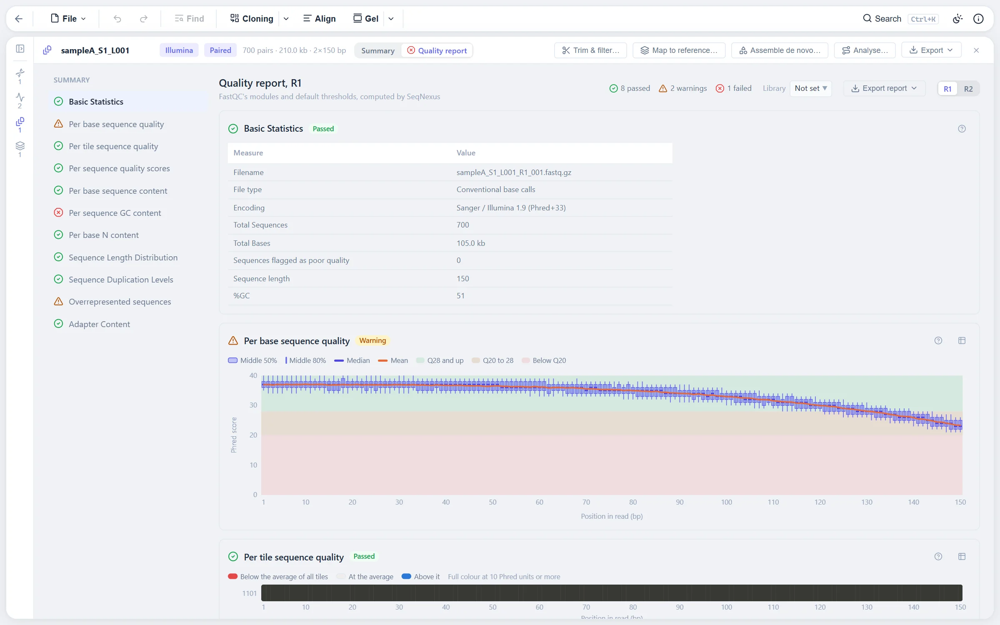

Read sets in the browser
A read set holds the reads of one sample: a FASTQ file, an R1 and R2 pair, or a long-read run. Only its description, meaning its name, technology and quality figures, is kept with the session. The reads themselves go into the browser's database and are read a chunk at a time by workers, so a sample of millions of reads never has to be held in memory.
Gzipped files are inflated with a reader that handles several gzip members back to back, which is what Illumina's BGZF files are. Two files whose names differ only in a mate marker are taken as a pair, read in lockstep, and must carry the same read ID in the same order, or the import stops and says at which read. A single file whose consecutive reads come in twos with the same ID is offered as interleaved. The technology is guessed from the read headers first, then from read lengths, and a guess from lengths is marked as such so you can change it. The technology decides which quality rules apply and how reads are trimmed.
Reads are stored in compressed chunks: each read's length, the IDs as one joined text, the bases two to a byte in the 4-bit code BAM uses so N and the IUPAC letters survive, and one byte of quality per base. A test chunk of Illumina reads comes out under an eighth of its FASTQ text.
Quality control, with verdicts
Figures are gathered while the reads are imported, a read at a time: the share of bases at Q20 and Q30, quality by position per mate over the zones FastQC uses, read length with its N50, GC content per read and the share of N calls.
A read's mean quality is computed from error probabilities, not by averaging the scores. Averaging overstates it: one Q5 base, a 32 % chance of error, costs far more accuracy than one Q40 base gains, so a read of Q40 and Q5 bases half and half has a mean score of 22.5 but an expected error rate of 16 %, which is Q8. This is how Nanopore and PacBio tools report read quality, and the read set shows the median over reads.
Each module says pass, check or fail, against rules of thumb set from what current instruments deliver rather than a standard:
| Measure | Good | Check | Fail |
|---|---|---|---|
| Short reads, bases at Q30 and up | 75 % and up | 60 to 75 % | below 60 % |
| Nanopore, median read quality | Q12 and up | Q9 to 12 | below Q9 |
| PacBio, median read quality | Q20 and up | Q15 to 20 | below Q15 |
| N calls | 1 % or less | over 1 % | over 5 % |

Trimming
Trimming makes a new read set and keeps the original. Short reads go through fastp compiled to WebAssembly, in batches of 100,000 reads, with adapters trimmed (for pairs, where the two mates overlap and run past the insert), both ends cut while a 4-base window's mean quality is below the threshold, and reads shorter than the minimum dropped with their mate. Fastp's own defaults stay on, so reads with more than 40 % of bases below Q15 or more than 5 N are dropped, and poly-G tails are cut on the two-colour chemistries that call G where there is no signal.
Long reads are filtered rather than trimmed, by minimum length and minimum mean read quality. Fastp's short-read model does not fit them, and current basecallers already cut the sequencing adapters.
Mapping to a reference
A read set is mapped to one or more open sequences with minimap2 compiled to WebAssembly, with the preset for its technology. Several references, a chromosome and its plasmids, go into one run, so each read lands on whichever fits it best rather than being forced onto the only one offered. The result is an assembly holding the mapping.
Circular references get two passes. The first is against the sequences as they are. The reads that may lie across an origin, meaning unmapped, split, stopped at an end with bases left over, or a pair that is not proper, go to a second pass against the references with their start appended, so a read across the origin maps in one piece and positions past the end are folded back. The second pass is taken only where it placed the read better.
This matters more than it sounds. In the appended stretch the sequence is there twice, so minimap2 gives a read mapped inside it a mapping quality of zero. Mapping every read against the extended references, as was done at first, gave every read lying wholly in the first kilobase of a plasmid a mapping quality of zero, a third of pUC19's reads, and since variant calling leaves out such reads, a planted deletion and insertion there were not even candidate sites. With two passes only the reads that need the origin see the appended stretch, and a test checks that rotating the reference shifts every variant and nothing else.
Coverage counts the aligned bases of every primary and supplementary alignment whatever its mapping quality, so the origin of a circular reference is not left uncovered, and deletions are not counted, as samtools depth does by default. The report gives reads mapped, the share in proper pairs, mean depth, the share of bases covered once and ten times, coverage along each reference, fragment lengths and mapping qualities.

Variants and their effect on the protein
Calling and judging are separate. Every candidate site is kept with its evidence, meaning where it is, what it changes, how many reads cover it and how many carry the change on each strand, and how likely that many reads would show it by sequencing error alone. The thresholds are applied on top, so the table changes as you type them and a VCF can name the thresholds a variant failed.
A coding feature is read as the ribosome reads it: a spliced CDS through its exons only, on its own strand, from its codon start, and on past its end into what follows, translated with its own genetic code. With the standard code a mitochondrial gene's TGA reads as a stop, so a harmless change would be reported as nonsense; the mitochondrial tables read it as tryptophan. The first codon of a CDS that starts whole counts as methionine when it is one of its code's start codons, so a change from one start to another is synonymous and a change to anything else is a lost start.
The effect is computed by applying the variant and translating both versions, rather than by judging an indel on its length. That catches an in-frame insertion that brings a stop, a deletion of the stop codon, and where a frameshift ends, all with one rule. Severity runs from start lost, nonsense, frameshift and stop lost down through splice site, in-frame indels, missense, synonymous and intron. Names follow the HGVS recommendations, counting through exons only, moving indels as far 3' as their exon allows, and giving the protein change in both the one-letter and the recommended three-letter form.
Several samples, and the guided pipeline
A mapping holds one or more samples: read sets, or an imported SAM or BAM file, mapped to the same references. The samples page shows a matrix of variants against samples, where a cell is the share of that sample's reads carrying the variant. A blank cell means too few reads cover the position for the sample to say, which is kept apart from 0 %. Clone verification runs per sample with the same verdict a Sanger contig gets.
Analyse reads goes from read sets to a mapping with its variants in one pass: trim and filter, map with the right preset and, for amplicons, primer clipping, then call the variants and find the soft-clip junctions if asked. Each step is the same background job the separate dialogs run, so the results are the same, and a step that fails stops only its own sample. Switched to de novo, each read set is cleaned up, assembled with the method for its reads, and mapped back to its own contigs.
De novo assembly
Three methods, picked by what the reads are.
- Whole plasmids and amplicons from long reads. When a plasmid or amplicon is sequenced whole, many reads are its full length and make a sharp peak in the read lengths. Each peak is taken as a product. A peak must hold enough reads above what its flanks would give by chance that a Poisson tail puts the chance of it below one in a million, because thousands of windows are looked at and at an ordinary threshold a broad spread of broken molecules would show peaks that are not there.
- A genome from long reads. Reads are overlapped against each other with minimap2, laid out and polished, as miniasm does. The longest reads of at least 1 kb are used, leaving out the tenth with the lowest quality, up to about 40x, since past that more reads add overlaps to compute but no contiguity.
- Short reads. Illumina reads are far shorter than a plasmid, so they are assembled from their k-mers, as Velvet and SPAdes do. The k-mer spectrum gives the genome length and coverage, reads are sampled down to about 100x, and k-mers below the solid threshold, the bottom of the valley between the error peak and the genome's peak, are dropped.
Either way every read is mapped back to the contigs and the candidate sites recounted, so the contigs open in the same reads view with coverage, variants, report, BAM export and figures. Reads that disagree with a contig are its variants, which is how a minority of the population shows up. A contig can be checked against the sequence it was meant to be, and the assembly graph is kept with it.
Scale
Measured on a simulated bacterial genome of 5 Mb with 850,000 read pairs of 150 bases, about 50x, on one core:
| Step | Time |
|---|---|
| Import 1.7 million reads with their statistics | 29 s |
| Store the mapping: sort, pages, coverage, candidate sites | 28 s |
| Call variants over 2,630 candidate sites | 2 s |
| Export BAM with its index | 17 s |
| Open the view on a 100 kb window with its pileup | under 0.5 s |
All 2,000 planted SNPs were found. In the browser itself, 100,000 pairs from lambda phage imported with their quality report in about 5 seconds, mapped to the 48.5 kb genome in about 38 seconds, and exported as a 9 MB BAM with its index in about 7 seconds, with the page's own heap under 160 MB throughout.
Where to find it
Drag in FASTQ or FASTQ.gz files, which pair themselves. The read set page holds the quality report, trimming, mapping and Analyse reads. Open the editor from its web address rather than from a file on disk: a page opened over file:// may not load the WebAssembly tools, so fastp and minimap2 cannot run.
Limits
- Phred+64 qualities from older Illumina pipelines are not detected.
- The wider splice region that VEP flags is not flagged here, and UTR consequences are not named.
- De novo contigs are a majority consensus of raw reads. On nanopore data that leaves residual errors, so polishing elsewhere is the usual next step; an import round trip is provided for it.
- Opened from disk rather than served, import and export still run but the WebAssembly tools cannot.
References
- Li H (2018) Minimap2: pairwise alignment for nucleotide sequences. Bioinformatics 34:3094-3100.
- Chen S, Zhou Y, Chen Y, Gu J (2018) fastp: an ultra-fast all-in-one FASTQ preprocessor. Bioinformatics 34:i884-i890.
- Andrews S (2010) FastQC: a quality control tool for high throughput sequence data. Babraham Bioinformatics.
- Li H, Handsaker B, Wysoker A, et al. (2009) The Sequence Alignment/Map format and SAMtools. Bioinformatics 25:2078-2079.
- den Dunnen JT, Dalgleish R, Maglott DR, et al. (2016) HGVS recommendations for the description of sequence variants. Human Mutation 37:564-569.